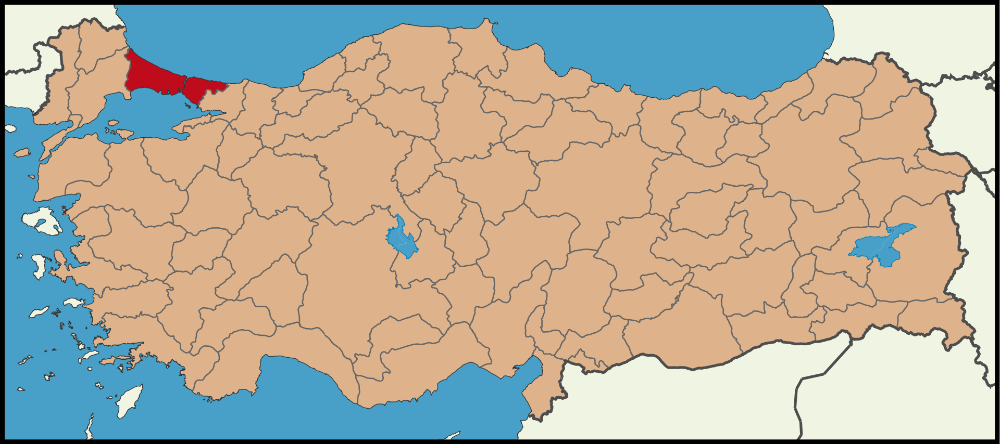
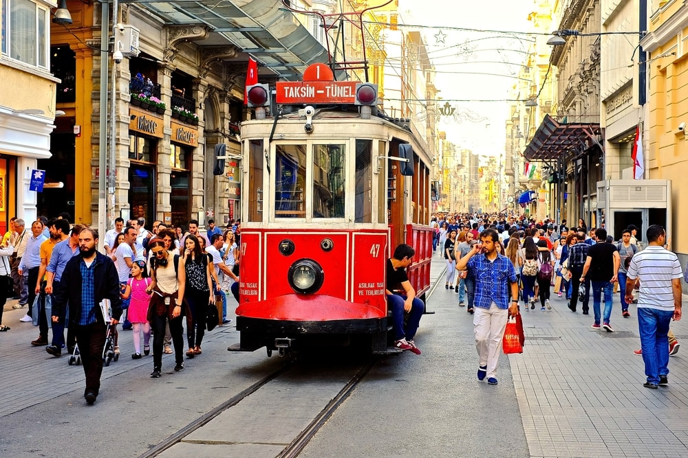
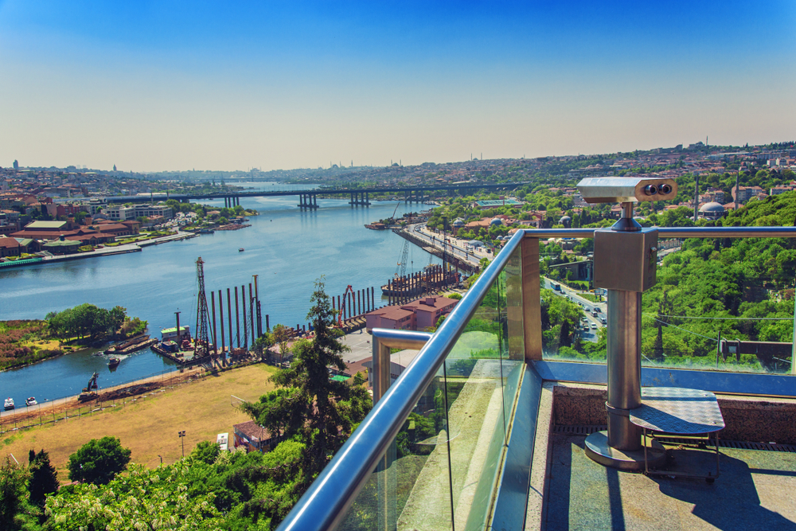
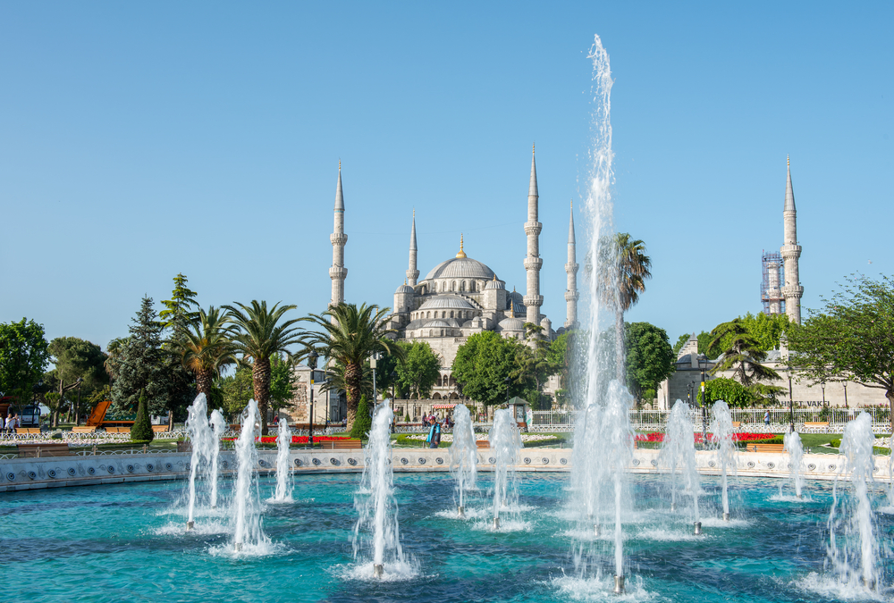
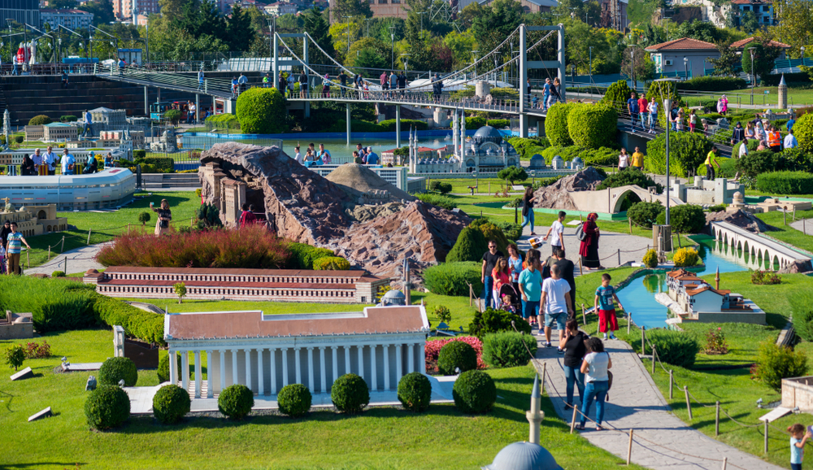
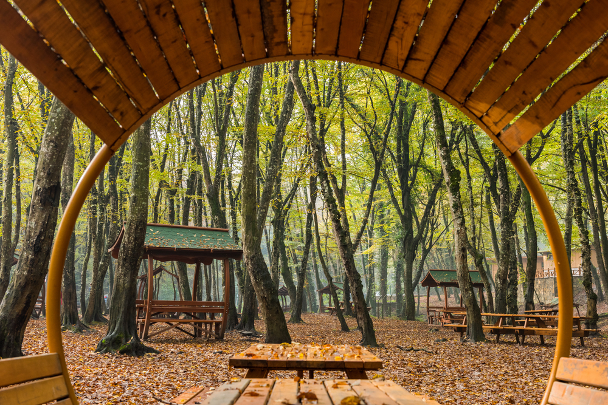

İstanbul şehri benim doğduğum ve büyüdüğüm şehirdir. Bildim bileli hep bu şehirdeydim o yüzden bu şehrin insana sunabilecek çoğu özelliğini gördüm. Bu sayfada, İstanbulu kendi tecrübelerime ve dış kaynaklardan aldığım bilgilere göre kısa bir şekilde tanıtacağım.

İstanbul, Türkiye'de Marmara Bölgesi'nde yer alan şehir ve ülkenin 81
ilinden biri. Ülkenin en kalabalık, ekonomik, tarihi ve sosyo-kültürel
açıdan önde gelen şehridir. Şehir, iktisadi büyüklük açısından dünyada
34. sırada yer alır. Nüfuslarına göre şehirler listesinde belediye
sınırları göz önüne alınarak yapılan sıralamaya göre Avrupa'da
birinci, dünyada ise altıncı sırada yer almaktadır.
Dünyanın en eski şehirlerinden biri olan İstanbul, 330-395 yılları
arasında Roma İmparatorluğu, 395-1204 yılları arasında Bizans
İmparatorluğu, 1204-1261 yılları arasında Latin
İmparatorluğu,1261-1453 yılları arasında tekrar Bizans İmparatorluğu
ve son olarak 1453-1922 yılları arasında Osmanlı İmparatorluğu'na
başkentlik yaptı.[12] Ayrıca İstanbul, Hilâfetin Osmanlı
İmparatorluğu'na geçtiği 1517'den kaldırıldığı 1924'e kadar İslam
dünyasının da merkezi oldu.
Nüfus: 15.462.452
Toplam Yüzölçümü: 5.461 km²
Kuruluş Tarihi: MÖ 685

Şehrin en hareketli caddelerinden biridir. Bir sürü tarihi yapı da içerir ve burada yapılabilecek çok şey vardır. Gezmesi oldukça keyiflidir ve güzel restoranlar, tatlıcılar da bulunur. Kalabalıklığı ile ünlü olsa bile farklı ülkelerden insanlarla dolu dolu vakit geçirip keyif alabileceğiniz bir yer. İstanbula gelirseniz burayı gezmenizi tavsiye ederim.

Eyüp Sultan'ın simgesi olduğundan tarihi açıdan da bir ağırlık taşır. Piyer Loti tepesine teleferikle çıkabilmek mümkün fakat teleferik ile çıkmak istemiyorsanız, Eyüp Sultan Cami'nin yan tarafından mezarlıkların ortasından yüruyüş yolu vardir. Manzara tepede şahanedir çay bahçesi bulunur Çay Bahçesi'nde çay kahve içip yemek yiyebilirsiniz.

Tümü antik Bizans hipodromu alanının etrafında bulunan, kaçırılmayacak kadar güzel ve kısa bir yürüyüş mesafesinde birbirine yakın pek çok gezilecek yere sahip Sultanahmet son derece popüler, turistik bir destinasyon ve ziyaretçileri kendine hayran bırakacak önemli bir noktadır. Sultan Ahmet Camii, Ayasofya, Topkapı Sarayı gibi harikaların yanı sıra, İstanbul’un nispeten küçük olan bu bölgesi huzur ve sükunet atmosferini korumayı bir şekilde başarmakta ve ziyaretçilere büyük ölçüde daha az tanınan ama hoş yollar ve yan sokaklardan oluşan güzel bir dünya, görkemli Boğaz manzaraları ve konaklama tesisi olarak bütçeye ve zevke uygun çok çeşitli, etkileyici seçenekler sunmaktadır.

Miniatürk ya da Minyatür Türkiye Park, Türkiye'deki çeşitli yapıtların maketlerinin sergilendiği, Beyoğlu, İstanbul'da yer alan 60.000 metrekareyle dünyanın en geniş alana kurulmuş minyatür parkıdır. Burayı gezmek aşırı keyiflidir. Minyatür yapılar aşırı detaylı olup birçok farklı yapı barındırmakta. İstanbulun her yerini gezmeden birçok ünlü yapıyı burada minyatür halde gözlemleyebilirsiniz.

İstanbul’da yaşamasanız bile adını duymuş olabileceğiniz bir yer olan Belgrad Ormanı; İstanbul gibi bir metropole adeta hava aldırıyor. Belgrad Ormanı’ndaki yeşilliklerin içinde güne başlamak çok ferahlatıcı bir his. Burada sabah sporunu yapabileceğiniz gibi ayrıca orman içerisinde pikniğe ayrılmış alanlar da mevcut. Eğer binalardan bıktıysanız burayı ziyaret etmenizi tavsiye ederim.